INNOVATION PRACTICUM FOR
TECHNICAL EDUCATION
TALENT CREATION IN TECHNICAL EDUCATION
Forge's Innovation Practicum is a curriculum-integrated framework, strategically focused on driving trans-disciplinary innovation through multidisciplinary student teams. Anchored in higher technical education, it cultivates next-generation talent by co-creating with industrial companies, public sector departments, and tech startups.
CERTIFIED INNOVATION PROFESSIONALS
TRANSFORMING EDUCATORS TO INNOVATION PROFESSIONALS
The Forge.Fellows program transforms educators into innovation professionals capable of shaping the next generation of innovators while driving meaningful industry collaborations.
Educators are given a strong foundation in innovation and entrepreneurship learning the core principles of fostering creativity, developing entrepreneurial mindsets, and understanding the frameworks needed to guide students in early-stage innovation projects.
Educators advance to a more hands-on role, focusing on hardware technologies and the innovation practicum - with emphasis on practical experience, thereby enabling educators to mentor students through the application of technological tools and methodologies in real-world contexts.
Educators transition into leadership roles, managing product development processes and facilitating co-creation with industry partners. In this capacity, they oversee the end-to-end innovation lifecycle, from ideation to execution, ensuring that IPLs generate impactful and scalable solutions.
INNOVATION FOUNDATIONS
HARNESSING TOOLS & TECHNOLOGIES TO DEVELOP INDUSTRIAL SOLUTIONS
Forge's Innovation Catalyst program leverages a sequence of systematic, structured sprints to inculcate an innovation mindset in students - from understanding problems to delivering prototypes, ultimately enabling them to leverage frameworks, tools and technologies to create impactful industrial solutions.
Educators are given a strong foundation in innovation and entrepreneurship learning the core principles of fostering creativity, developing entrepreneurial mindsets, and understanding the frameworks needed to guide students in early-stage innovation projects.
Educators advance to a more hands-on role, focusing on hardware technologies and the innovation practicum - with emphasis on practical experience, thereby enabling educators to mentor students through the application of technological tools and methodologies in real-world contexts.
Educators advance to a more hands-on role, focusing on hardware technologies and the innovation practicum - with emphasis on practical experience, thereby enabling educators to mentor students through the application of technological tools and methodologies in real-world contexts.
Educators transition into leadership roles, managing product development processes and facilitating co-creation with industry partners. In this capacity, they oversee the end-to-end innovation lifecycle, from ideation to execution, ensuring that IPLs generate impactful and scalable solutions.
INNOVATION CERTIFICATION
FOSTERING TECHNOLOGY ORIENTED INNOVATION AND ENTREPRENEURSHIP
ProtoSem® is a 20 week Graduate Innovation Engineer Certification offered as a comprehensive skills and competency development programme that integrates an innovation-centric approach into the Engineering Curriculum. Pre-final & Final Year Engineering students work towards designing, developing, and deploying innovative solutions to solve real world problems provided by the Industry and in that process get transformed into employable individuals and to even emerge as technical entrepreneurs. This first-of-its kind program offers expert training, tech & innovation mentoring through a flipped classroom approach and hands-on activities, nabling students to securely develop Minimally viable Prototypes (MUPs) - thereby gaining deep exposure to tools and techniques for prototyping innovative solutions using creative technologies covering IoT sensors, edge computing & networks, additive manufacturing industrial automation, robotics, artificial intelligence, AR/VR etc.
Addressing the rapidly widening skills gap and embracing innovation, ProtoSem equips students with the expertise needed for the evolving industry through project-based learning, industry-sponsored challenges, and hands-on experience in cutting-edge technologies like AI, IoT, robotics etc. It provides a comprehensive multidisciplinary skill development in advanced industrial technology domains to the students along with the requisite professional capability paving way to differential employability & tech enterprises.

GRASSROOT INNOVATORS PRODUCT ACCELERATOR
ProtoSem® is a 20 week Graduate Innovation Engineer Certification offered as a comprehensive skills and competency development programme that integrates an innovation-centric approach into the Engineering Curriculum. Pre-final & Final Year Engineering students work towards designing, developing, and deploying innovative solutions to solve real world problems provided by the Industry and in that process get transformed into employable individuals and to even emerge as technical entrepreneurs. This first-of-its kind program offers expert training, tech & innovation mentoring through a flipped classroom approach and hands-on activities, nabling students to actively develop Minimum Usable Prototypes (MUPs) - thereby gaining deep exposure to tools and techniques for prototyping innovative solutions using creative technologies covering IoT sensors, edge computing & networks, additive manufacturing industrial automation, robotics, artificial intelligence, AR/VR etc.
Addressing the rapidly widening skills gap and embracing innovation, ProtoSem equips students with the expertise needed for the evolving industry through project-based learning, industry-sponsored challenges, and hands-on experience in cutting-edge technologies like AI, IoT, robotics etc. It provides a comprehensive multidisciplinary skill development in advanced industrial technology domains to the students along with the requisite professional capability paving way to differential employability & tech enterprises.


.png)